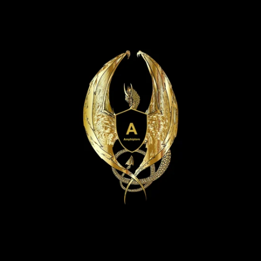
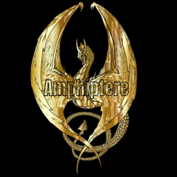
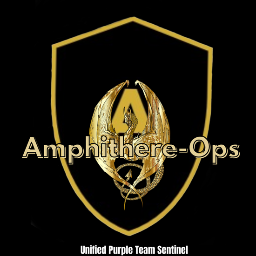
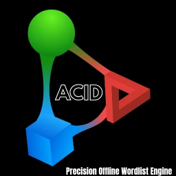

Amphiptere Sentinel Integrated in Amphiptere OSAmphiptere Sentinel is a perimeter defense tool. It manages system firewall rules (iptables) and listens on TCP port 9999 to secure access using a temporary passcode mechanism.
Written in Go. Amphiptere Sentinel is pre-installed and configured within Amphiptere OS to provide system-level perimeter defense. It is an integrated component of Amphiptere OS.
To run or manage the tool inside Amphiptere OS, execute it with root or sudo privileges:
Enable Defense
sudo go run amphiptere.go --enable
Disable Defense
sudo go run amphiptere.go --disable
Check Status
sudo go run amphiptere.go --status

Amphiptere-Ops Integrated in Amphiptere OSAmphiptere-Ops is a unified purple team utility written in Go. It performs simulated vulnerability scanning (red team perspective) alongside defense verification (blue team perspective), and automatically compiles the results into a structured text report.
Amphiptere-Ops is an integrated utility within Amphiptere OS environment designed for purple team assessments.
To run the tool inside Amphiptere OS:
go run amphiptere-ops.go

Acid Cracker Integrated in Amphiptere OSAcid is an offline high-performance password and hash-cracking tool written in Go. It performs wordlist-based SHA-256 brute-force evaluations for security assessments, audits, and password testing.
Acid is an integrated security assessment tool within Amphiptere OS, optimized for offline hash evaluation.
To run the tool inside Amphiptere OS:
go run acid.go -hash <sha256_hash> -wordlist <path_to_wordlist.txt>
Owl-Auditor is a lightweight, high-performance host and attack surface intelligence engine written in Go. It performs localized security audits to inspect system configurations, file permissions, firewall statuses, and active listening ports before adversaries can leverage them.
Owl-Auditor is an integrated auditing engine within Amphiptere OS for host-level attack surface intelligence.
To run the tool inside Amphiptere OS:
go run owl-auditor.go
For target-specific audit:
go run owl-auditor.go -ip <target_ip>
Huntdd-Ghost is a lightweight, local-only filesystem auditing tool written in Go. It performs deep enumeration and hash-based vulnerability audits to scan directories for sensitive files, misconfigurations, and insecure permissions.
Huntdd-Ghost is the only open-source tool from Amphiptere Armory. It is available for public use as a preview from the Armory and is also integrated in Amphiptere OS.
Default Scan (Current Directory)
go run huntdd.go
Custom Target Scan Path
go run huntdd.go -scan <directory_path>
Example:
go run huntdd.go -scan /path/to/your/files
Amphiptere Sentinel, Amphiptere-Ops, Acid Cracker, and Owl-Auditor are integrated components of Amphiptere OS. Huntdd-Ghost is provided as an open-source preview from the Armory.
All tools in Amphiptere Armory are created for educational, defensive research, and authorized security testing only on systems you own or have explicit permission to test. AmphiptereOS is not responsible for any misuse, damage, or legal consequences arising from the use of these tools.
Use responsibly: defend, audit, and learn — don't disrupt or exploit.